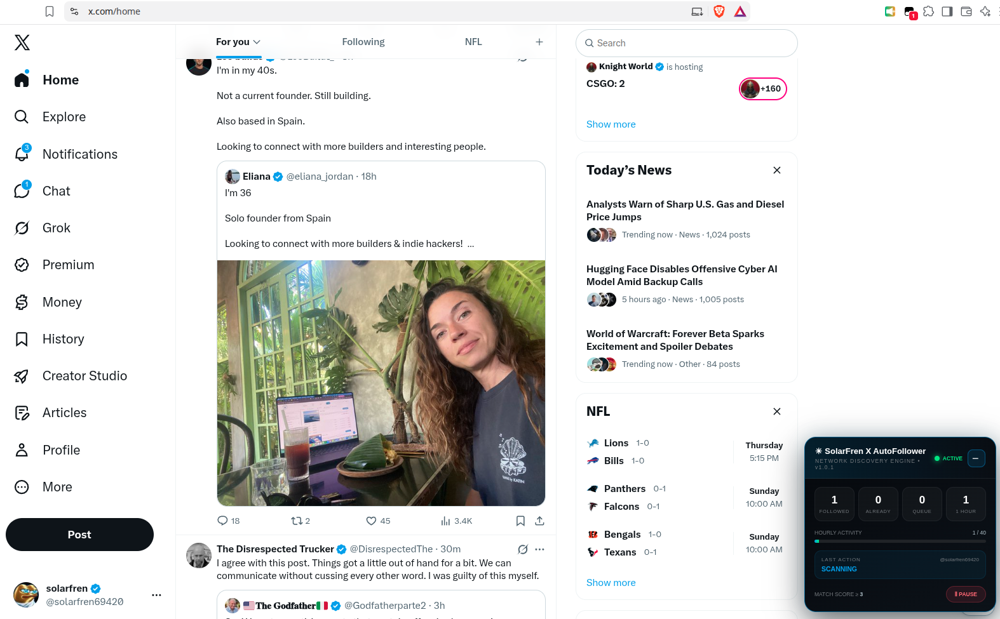

Looks for your kind of people.
Scores introduction and networking phrases like “solo founder,” “indie hacker,” and “looking to connect” as posts appear.
Your next internet fren is already on your timeline. SolarFren spots founder, builder, and networking introductions on X—and follows matching accounts as you scroll.

For the solo founders, late-night builders, and people saying “let’s connect.” A little browser-side help finding each other.
Scores introduction and networking phrases like “solo founder,” “indie hacker,” and “looking to connect” as posts appear.
Check activity, pause with a click, or minimize the panel while it keeps running. Your panel size is remembered.
Adjust the matching score, delays, and follow limit in the source. Inspect every line, fork it, or build on it.
SolarFren does not invent posts or manufacture engagement. You post your own introduction, interact with similar builder posts, let X learn that this is the conversation you want, then run the script on the feed that results.
Replace the brackets, post it from your own X account, and make it sound like you.
I'm [your age]. [Your role] from [your location]. Looking to connect with more builders & indie hackers!
EXAMPLE: “I'm 35. / Solo founder from U.S.A. / Looking to connect with more builders & indie hackers!”
X as usual, with the SolarFren dashboard tucked into the corner.

Install once, then open your timeline.
The default 40-per-hour counter applies to this page session; reloading or opening another tab starts a separate counter. X may enforce its own limits.
Install the Tampermonkey browser extension and enable userscripts for your browser.
Click “Get SolarFren,” review the script in Tampermonkey, and choose Install.
The panel starts scanning automatically. Use Pause to stop actions, − to minimize, and + to restore. Chat and message routes are excluded.